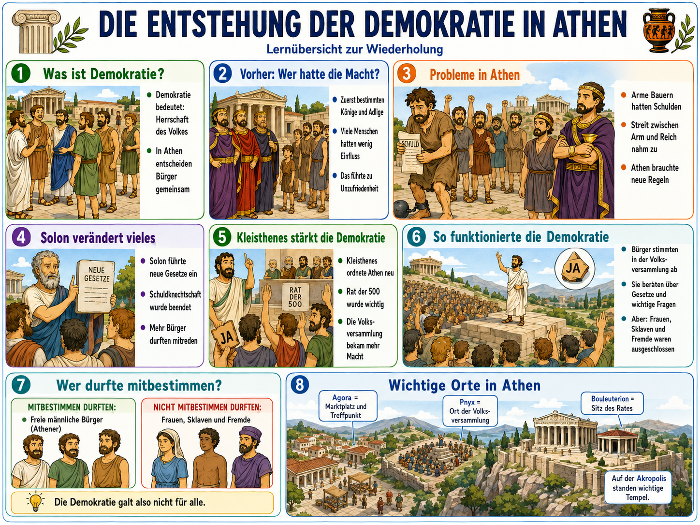
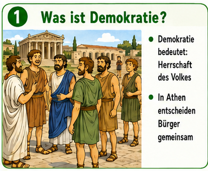
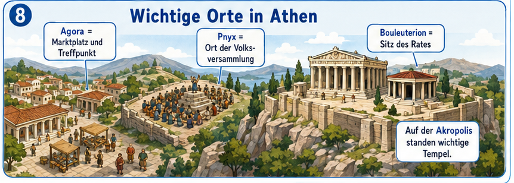

Demokratie entstand in Athen nicht auf einmal, sondern in Schritten: aus sozialen Konflikten,
Reformen und neuen politischen Regeln. Dieses Modul verbindet die Uebersichtsgrafik mit
zusaetzlich recherchierten Fakten, damit du sicher zwischen Bildaussage und historischer
Einordnung unterscheiden kannst.

Arbeitsgrafik als roter Faden: Wir nutzen die einzelnen Boxen gezielt in den Lernschritten.
Didaktischer Lernweg fuer Klasse 5
1. Verstehen
Du klaerst zuerst den Begriff Demokratie und erkennst das Ausgangsproblem in Athen.
2. Zeitlich ordnen
Du setzt Solon, Kleisthenes und spaetere Schritte auf einer einfachen Zeitleiste in die richtige Reihenfolge.
3. Bewerten
Du unterscheidest: Fortschritt fuer Buerger, aber klare Grenzen fuer Frauen, Sklaven und Fremde.
4. Anwenden
Du trainierst mit Aufgaben und ueberpruefst dein Wissen im Pruefungsmodus.
Boxen-Explorer: Schritt fuer Schritt durch die Grafik
Waehle eine Box. Dazu bekommst du Kernidee, historisches Datum und einen Faktencheck.

Historischer Taktgeber: Mehr als die Grafik
Diese Zeitleiste ergaenzt die Grafik um wichtige Daten, die in Klassenarbeiten oft abgefragt werden.
ca. 621 v. Chr. - Drakon
Erstmal wurden Gesetze in Athen schriftlich festgehalten. Viele Strafen galten als sehr hart.
594 v. Chr. - Solon
Schuldknechtschaft wurde beendet, Schulden wurden erlassen, und mehr Menschen konnten politisch mitwirken.
508/507 v. Chr. - Kleisthenes
Neue Einteilung in zehn Phylen und Ausbau des Rates der 500 staerkten die Beteiligung breiterer Buergergruppen.
462 v. Chr. - Ephialtes
Der Adelsrat Areopag verlor Macht. Mehr Entscheidungen gingen an Rat, Volksversammlung und Gerichte.
5. Jahrhundert v. Chr. - Perikles
Tagegelder (Diaeten) fuer oeffentliche Aufgaben erleichterten auch aermeren Buergern die Teilnahme.
Wichtige Orte der Demokratie

Quellenbasis und kritische Einordnung
Die Inhalte wurden gegen Fachquellen geprueft. Wichtiges Ergebnis: Athen war ein fruehes Modell
direkter Mitbestimmung, aber keine Demokratie fuer alle Menschen.